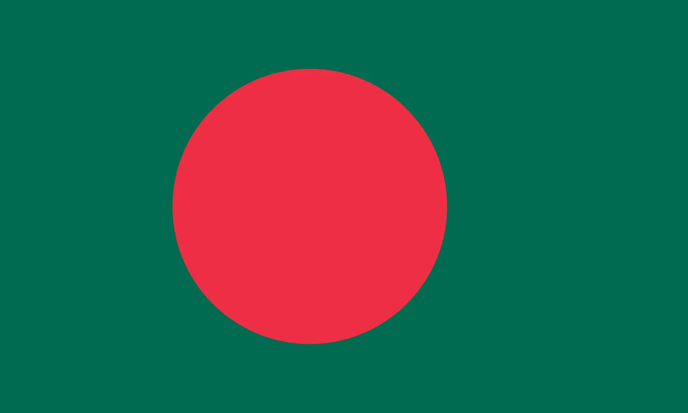
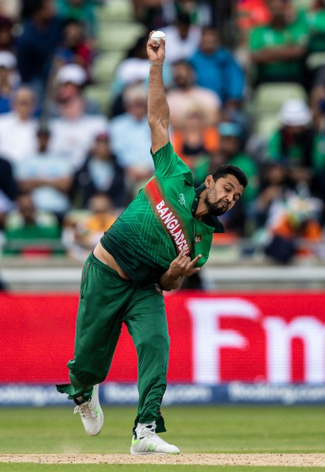
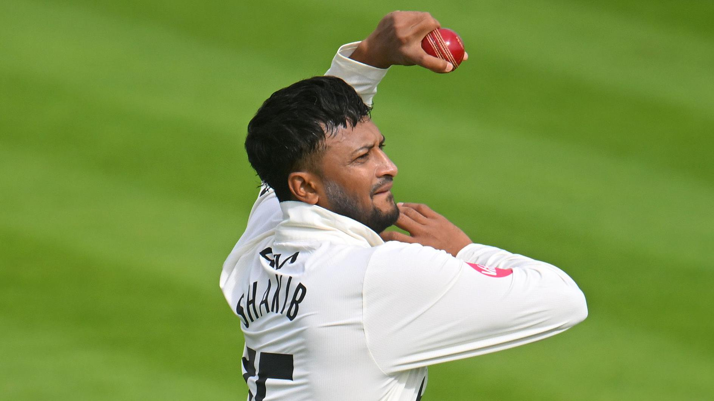
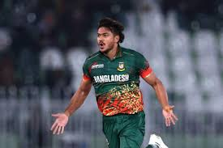
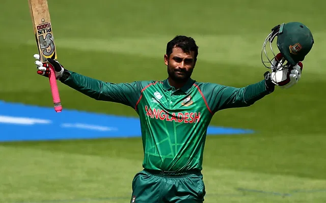
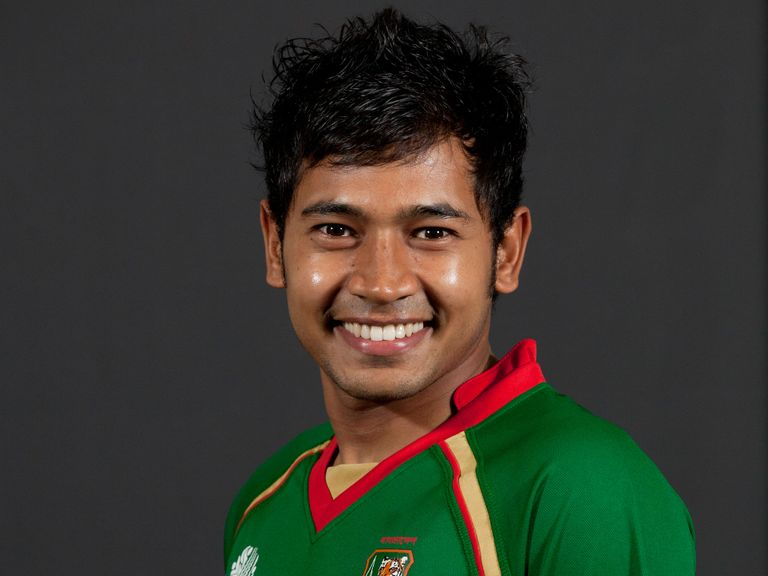

Click on the ICC below to go back to the Homepage

 |
|
History |
The 1970s |
Venues |
Sheikh Abu Naser Stadium Location: Khulna Capacity: 15,000 First Used: 2006 Notable Matches: Hosted Test matches, ODIs, and T20Is1. Shaheed Chandu Stadium Location: Bogura Capacity: 18,000 First Used: 2006 Notable Matches: Hosted Test matches and ODIs1. M. A. Aziz Stadium Location: Chattogram Capacity: 30,000 First Used: 1988 Notable Matches: Hosted several international matches, including Tests and ODIs1. Bangabandhu National Stadium Location: Dhaka Capacity: 36,000 First Used: 1955 Notable Matches: Hosted numerous international matches before becoming a venue primarily for football |
world records |
Shakib Al Hasan: Most wickets in a single World Cup (11 in 2019); first to score 600 runs and take 10 wickets in a single World Cup (2019). |
What place did they get in every world cup(odi) |
1975: Group Stage |

Mashrafe Mortaza, known as the "Narail Express," debuted in 2001 and became Bangladesh's first prominent fast bowler. Despite numerous injuries, he led Bangladesh to significant victories, including the 2007 World Cup win over India. As captain, he guided the team to new heights and retired from ODIs in 2020.

shakib al hasanShakib Al Hasan is one of cricket's greatest all-rounders and Bangladesh's finest player. He debuted in 2006 and has consistently topped the ICC all-rounder rankings. Shakib has led Bangladesh to historic victories, including their first overseas Test series win in 2009 and a Test win against Australia in 2017

Taskin ahmedTaskin Ahmed is a prominent fast bowler for Bangladesh, known for his pace and consistency. He made his ODI debut in 2014, taking 5 wickets against India, and has been a key player since1. Taskin played a crucial role in Bangladesh's historic ODI series win against South Africa in 2022
GREAT BATSMEN AND ALL ROUNDERS

tamim iqbalTamim Iqbal is one of Bangladesh's most accomplished cricketers and a prolific opening batsman. He made his ODI debut in 2007 and has since become the first Bangladeshi player to score over 15,000 international runs1. Known for his aggressive batting style, Tamim has played crucial innings, including a memorable century at Lord's in 20102. He has been a key figure in Bangladesh's cricketing success

mushfiqur rahimMushfiqur Rahim is a top Bangladeshi cricketer, known for his wicket-keeping and batting. He debuted in 2005 and has scored over 11,000 international runs. Mushfiqur holds the record for the highest individual score by a Bangladeshi in Test cricket and is the first wicketkeeper-batsman to score two double-hundreds.